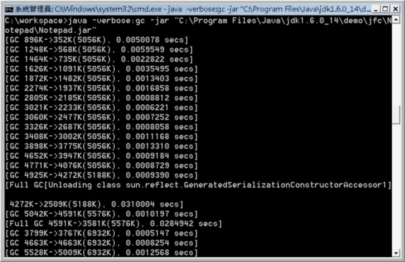

|
|
GC前後到底有什麼差別？當然，理論上會清出可用的記憶體空間，至於清出了多少空間？你可以在執行JVM時，使用-verbose:gc選項，例如啟動JDK中的記事本範例程式：  你可以觀察到的是： [GC類型 GC前使用量->GC後使用量(Heap大小), GC花費時間] 以[GC 4925K->4272K(5188K), 0.0009390 secs]為例，所使用的類型是GC，GC前記憶體佔4925K，GC後記憶體佔2772K，目前JVM的Heap大小是5056K，GC花費了0.0009390秒。 另一個你可以看到的GC類型是Full GC，但可以注意到，所花費的時間相較於GC來的多，以圖中第一個看到的Full GC而言，總共花費了0.0310004秒，為GC類型的幾十倍時間。 在 哪些東西是垃圾？ 中談過，對於程式中不再能被循線參考到的物件，會被JVM視為垃圾而加以清除，基本原理就是掃描Heap中所有的物件，看看是否有物件不再能被參考到而後 予以回收。不過，線性掃描顯然行不通，因為隨著物件數量的增多，掃描的時間也會隨之增長，在大型應用程式中，所花費的時間更為可觀，而在GC動作時，應用 程式是處於停頓狀態的。 從J2SE 1.2開始，GC的基本演算法預設是基於輩份收集（generational collection）。在應用程式中，有些物件是產生出來用沒多久就沒用了，而有些物件則會一直活下去，甚至存活於整個應用程式生命週期，不過就大部份應用程式所觀察到的現象而言（當然，有針對例外的應用程式之演算法），大部份物件都很短命（infant mortality），也就是相較於前者來說，後者顯然少的許多，大部份的物件都是產生沒多久就不用了（可參考 http://java.sun.com/docs/hotspot/gc5.0/gc_tuning_5.html 中的第二張分佈圖）。 基 於大部份物件都很短命的觀察，若可以將產生出來的新物件集中在記憶體中某個區，當需要使用GC清出可用記憶體時，並不是掃描整個記憶體區塊，而是先掃描集 中管理新生物件的區塊，姑且叫作短命區好了，顯然地，可以節省不少掃描的時間，又可以清除不少短命物件。若掃描過程中，發現有些物件不用清除，則移至另一 個記憶體區管理，故且叫作長壽區好了，基本上長壽區的掃描次數可以不用那麼頻繁，因為大部份長壽區的物件可能都還會再使用。 這就是GC演算法基於輩份收集（generational collection）的基本原理，短命區在JDK5之後稱之為年輕輩（young generation），長命區則稱之為年長輩（tenured generation），而作用於不同輩份區的GC演算法也可以有所區別，年輕輩的GC演算法可針對物件的極度短命率作最佳化，所花費的時間大概與物件數量成比例，稱之為輕量收集（minor collection）。年長輩區物件的GC演算法則是緩慢的，因為必須掃描整個區的存活物件，稱之為重量收集（major collection）。 回到上面的那張圖，圖中顯示的GC，就是表示進行的是輕量收集，而Full GC表示所進行的是重量收集，也因此Full GC所花費的時間比GC來的多許多。 因此，針對大多數應用程式，也就是物件都是短命的假設下，基本的效能考量是，應該儘量讓不會再用到的物件於輕量收集時就被回收，也就是物件如果確定不使用了，就應釋放其參考，減少重量收集發生的機會，也要避免產生過多的短命物件，因為這些物件可能過渡到年長輩區，增加重量收集時的成本。 |